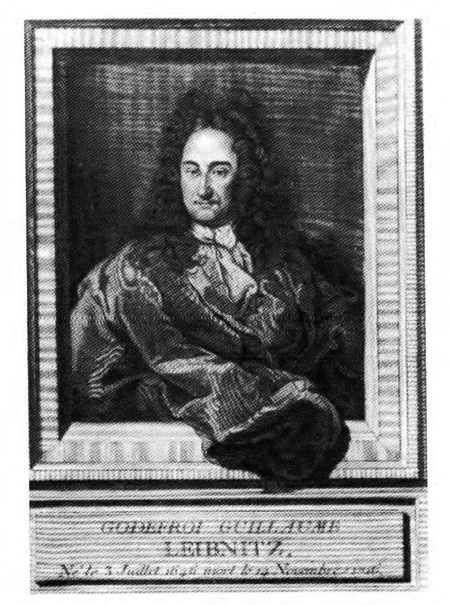
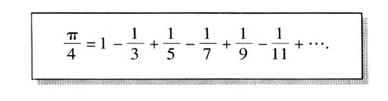
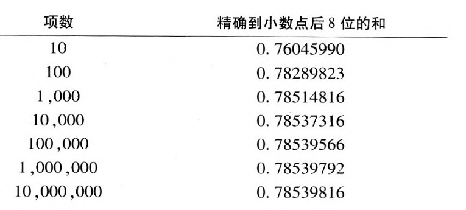

矿藏丰富的哈尔茨（Harz）山脉位于德国城市汉诺威东南，自公元10世纪起就已经有人来这个地区采矿了。由于地层深处含水较多，所以只有用水泵把水抽到河湾里才能采矿。17世纪时，水车使这些水泵的能力变得强大起来。但不幸的是，这就意味着当冬季水流冻结时，有利可图的采矿工作不得不终止下来。
1680～1685年，哈尔茨山的矿产管理者开始与一个不易相处的矿工频频发生冲突，这个矿工就是时年30多岁的G·W·莱布尼茨。莱布尼茨是要把风车作为一种额外的能源装置引进来，从而使得采矿工作可以常年进行。此时，莱布尼茨已经取得了许多成就。他不仅在数学上做出了重大发现，而且还以一位法学家而闻名，并且在哲学和神学方面写有大量著述。他甚至还担任了路易十五宫廷中的一项外交职务，以使这位法国的太阳王意识到对埃及（而不是对荷兰和德国）发动一场军事战争的好处。1
大约70年前，塞万提斯曾经写了一个忧郁的西班牙人与风车的不幸遭遇。与堂吉诃德不同，莱布尼茨是个顽固的乐天派。面对着世界上显而易见的苦难，莱布尼茨回应那些痛苦万分的人说，上帝对所有可能的世界都无所不知，他无可指责地创造了所有可能世界中最好的一个，我们世界中的一切邪恶因素都以一种最佳的方式为善所平衡。1然而最终的情况表明，莱布尼茨卷入哈尔茨山的采矿项目是极大的失败。他的乐观主义使他没有预见到，内行的采矿工程师会对一个声称要教他们如何做生意的新手抱以天然的敌意，他也没有考虑到风的不可靠性，以及一种新的机器不可避免地需要一个试验阶段。然而最不可思议的乐观想法是，他原本打算能够用他从这个项目中获得的收益开展一些工作。
莱布尼茨的眼光惊人地广阔和宏大。他为微积分运算而发明的符号一直沿用至今，这使得人们不用过多思考就可以很容易地进行复杂的演算。实际进行工作的似乎就是那些符号。在莱布尼茨看来，我们对整个人类知识领域也可实施类似的举措。他梦想对一种普遍的人工数学语言和演算规则进行一种百科全书式的汇编，知识的任何一个方面都可以用这种数学语言表达出来，而演算规则将揭示这些命题之间所有的逻辑关系。最后，他梦想能够制造出完成这些演算的机器，从而使心灵从创造性的思考中解脱出来。尽管莱布尼茨抱着乐观的态度，但他知道，把这个梦想转变为现实的任务非他个人力量所能及。不过他的确相信，如果有一些有能力的人在一个科学院中共同工作，那么相当一部分任务是可以在若干年内完成的。正是出于为这样一个科学院筹款的目的，莱布尼茨才卷入了哈尔茨山项目。

1646年，莱布尼茨出生于德国的莱比锡。那时的德国被分成了1000多个半自治的政治单元，几乎为持续了近30年的战争所毁。30年战争直到1648年才结束，尽管欧洲所有的主要力量都参与了这场战争，但它主要是在德国本土进行的。莱布尼茨的父亲是莱比锡大学的哲学教授，当孩子仅6岁时就去世了。到了8岁的时候，莱布尼茨不顾老师的反对，开始阅读父亲图书馆中的藏书，不久他便能够熟练地阅读拉丁文作品了。
莱布尼茨注定要成为人类历史上最伟大的数学家之一。他从他的老师那里得到了数学思想的启蒙，但老师们对欧洲其他地方的革命性数学著作一无所知。在当时的德国，即便是欧几里得的初等几何也是一门高等学科，人们通常只是在大学阶段才开始学习它。然而当莱布尼茨只有10岁时，他的老师就把亚里士多德于2000年前提出的逻辑系统介绍给了莱布尼茨，这门学科唤起了他的数学才能和激情。莱布尼茨对亚里士多德把概念分成固定的“范畴”着了迷，他产生了一种“奇思妙想”：他想寻求这样一张特殊的字母表，其元素表示的不是声音而是概念。有了这样一个符号系统，我们就可以发展出一种语言，我们仅凭符号演算，就可以确定用这种语言写成的哪些句子为真，以及它们之间存在着什么样的逻辑关系。莱布尼茨一生都沉迷于亚里士多德的理论，并且对此矢志不渝。
事实上，莱布尼茨在莱比锡写的学士论文就是关于亚里士多德形而上学的。他的老师在同一所大学的论文论述的是哲学与法律之间的关系。莱布尼茨显然也被法律研究所吸引，他又获得了一个法律学士学位，这一次他写的论文强调了系统性的逻辑在法律方面的应用。莱布尼茨对数学的第一项真正贡献源于他在大学讲授哲学课程的资格论文（Habilitationsschrift）：作为他关于一个概念符号系统的奇思妙想的第一步，莱布尼茨预见到计算出这些概念有多少种不同的组合方式是有必要的。这使他系统地研究了基本元素复杂排列的数目问题。这方面的工作首先见于他那篇大学授课资格论文，然后是那部内容更加广泛的专著《论组合术》（Dissertatio de Arte Combinatoria）。2
在继续进行法律研究的过程中，莱布尼茨为获得莱比锡大学的法律博士学位而提交了一篇论文。它的主题具有典型的莱布尼茨风格，即用理性来解决那些用一般方法难以处理的法律案件。由于种种原因，莱比锡大学并没有接受这篇论文，于是莱布尼茨就把它转交给纽伦堡附近的阿特道夫（Altdorf）大学，在那里这篇论文获得一致好评。22岁那年，莱布尼茨的正式教育完成了，他面临着毕业生的常见问题：如何获得一个职位。
莱布尼茨对在德国当大学教授没有多大兴趣，他还有另一条路可走，那就是找一个富有的贵族做资助人。他找到了美茵茨选帝侯的侄子约翰·冯·博伊纳堡，他让莱布尼茨去修订基于罗马民法的法律体系。不久，莱布尼茨被委任为高等上诉法院的法官，同时还参与了一些外交谋略，其中包括未能得逞的对波兰新任国王的选举进行干预，以及前往路易十四的宫廷执行一项任务。
30年战争使得法国成为欧洲大陆的霸主。坐落于莱茵河畔的美茵茨在战争期间就尝到过被军事占领的滋味。因此，美茵茨人非常清楚阻止敌人采取军事行动以及与法国保持良好关系的重要性。正是在这种情况下，博伊纳堡和莱布尼茨才策划说服路易十四及其幕僚意识到把埃及作为军事目标的巨大利益。这一建议——事实上，正是同一建议使拿破仑在一个世纪后陷入了军事灾难——最重大的历史后果就是把莱布尼茨带到了巴黎。
莱布尼茨于1672年来到巴黎，为的是促成埃及计划，并且帮助解决博伊纳堡的一些经济方面的问题。就在这一年，博伊纳堡死于中风的消息传来。尽管莱布尼茨仍在为博伊纳堡家族服务，但却丧失了可靠的收入来源。不过，他设法在巴黎又呆了4年，在这4年里他硕果累累，极为多产，其间还对伦敦作了两次短暂访问。31673年，他在第一次访问时展示了一台能够执行四种算术基本运算的计算机模型，这使他被一致推选为伦敦皇家学会会员。尽管帕斯卡曾经设计过一台能够进行加减运算的机器，但莱布尼茨的机器却可以进行乘除运算，这还是历史上的第一次。2这台机器包括了一个天才的部件——“莱布尼茨轮”，直到20世纪，这一部件仍在计算装置上普遍使用。关于他的机器，莱布尼茨写道：
莱布尼茨的机器只能做普通的算术，但他却把握住了机器演算更为深广的含义。1674年，他描述了一种能够解代数方程的机器。一年之后，他为一种机械装置写了相应的逻辑推理，这样就指出了一个目标，即把推理归结为一种演算，并且最终制成能够完成这些演算的机器。5
对于时年26岁的莱布尼茨来说，一个至关重要的事件就是他见到了当时居住在巴黎的荷兰大科学家克里斯提安·惠更斯。43岁的惠更斯此前发明了摆钟，并且还发现了土星环。他最重要的贡献——光的波动理论还没有提出。惠更斯认为光是由波构成的，就像石块投入池塘中泛起的波浪传播开来一样。他的想法与伟大的牛顿完全相左，后者认为光是由一串子弹似的微粒流构成的。3惠更斯交给莱布尼茨一份书目，它使这位年轻人很快就了解了当前的数学研究状况。不久莱布尼茨就做出了重要的贡献。
17世纪数学研究的迅速发展主要得益于两项主要进展：
1.处理代数表达式（一般是高中代数的内容）的技巧已经被系统化，这种强大的技巧一直沿用至今。
2.笛卡儿和费马分别论证了，如何通过用一组组的数对表示点而把几何还原为代数。
数学家们都在运用这种新的手段来解决那些以前无法处理的问题。相当一部分工作要涉及极限过程，也就是说，用最终结果的近似值来一步步地逼近这个结果，从而解决一个问题。近似值是不够的，只有逼到极限才能获得一个精确解。
举一个例子便可说明这个概念，它是莱布尼茨早期得到的一个结果，对此他很是自豪：

等号的左边是我们所熟悉的圆的周长和面积公式中的π，4等号右边则是所谓的无穷级数；它的交替加减的数被称为这个级数的项。省略号的意思是它无限地继续下去。其中的每一项都是以1作为分子，连续的奇数作为分母的分数，它们交替加减，这可以从已经写出的有限的几项看得很清楚：先减去1/11，再加上1/13，再减去1/15等等。但我们真的可以进行无限次加减运算吗？并非如此。但是，从开头一项到任何一项为止，我们都可以获得对“真实”结果的一项近似，随着越来越多的项加入进来，这个近似结果也变得越来越好。事实上，这个近似可以通过加入越来越多的项以达到任意的精确度。对于莱布尼茨的级数来说，这可以从表中显示出来。当我们取到10000000项时，得到的数值与π/4的真实值即0.7853981634的前8位保持一致。5

莱布尼茨级数的近似值表
莱布尼茨级数给人留下了深刻的印象，因为它通过一种特别简洁的方式把奇数序列与π这个数继而与圆的面积联系了起来。这是可以利用极限过程来解决的一类问题——确定边界为曲线的图形的面积——的一个例子。另一类可以利用极限来解决的问题是确定准确的变化率，比如一个运动物体不断变化的速度。1675年，莱布尼茨即将结束他在巴黎的逗留，在这一年的最后几个月中，他用极限过程实现了概念和计算上的一连串突破，所有这些工作即被称为他所“发明的微积分”：
1.莱布尼茨发现，计算面积和变化率的问题从某种意义上说很有代表性，因为许多不同种类的问题都可以还原为这两类问题中的某一类。6
2.他还认识到，求解这两类问题的数学运算实际上彼此相反，这在很大程度上就如同加法和减法（或乘法和除法）运算彼此相反一样。今天，这些运算分别被称为积分和微分，它们彼此相反这一事实以“微积分基本定理”而闻名。
3.莱布尼茨为这些运算发展出了一套恰当的符号系统（这些符号一直被沿用至今），∫表示积分，d表示微分。7
这些发现把对极限过程的应用从一种只有少数几位专家能懂的奇特方法，变成了一种可以在教科书中向成千上万的人讲授的直截了当的技巧。6与本书的主题密切相关的是，莱布尼茨的成功使他确信，选取恰当的符号并且定出它们的操作规则是极为重要的。和d这些符号并不像一个语音符号系统那样代表着毫无意义的声音，而是代表着概念，这样就为莱布尼茨童年时的那种代表着一切基本概念的符号系统的奇思妙想提供了一个模型。
关于牛顿和莱布尼茨各自完全独立地发明微积分的过程，以及在真相大白之前英吉利海峡两岸之间针对剽窃指控的口诛笔伐，人们已经写过许多著述。对我们的故事而言，莱布尼茨所使用的符号的极大优越性是最重要的。7积分中所使用的一个关键技巧（“置换”法）在莱布尼茨的符号系统中实际上是必然出现的，而在牛顿的符号系统中则更为复杂。甚至有人指出，由于盲目地固守其民族英雄的方法，牛顿的英国追随者们对微积分的发展远远落后于其同时代的大陆同行。
就像许多品尝到了巴黎生活的特殊情趣的人那样，莱布尼茨想在那里尽可能长地呆下去。他一方面继续在巴黎工作和生活，一方面又试图维持他在美茵茨的关系。但没过多久，情况就很明朗了，只要他还呆在巴黎，美茵茨就不会再给他提供资助。与此同时，他收到了一份发自汉诺威——17世纪德国的许多个公国之一——公爵的职位邀请。尽管约翰·弗里德里希公爵对理智方面的东西不乏某些真正的兴趣，而且还承诺提供经济上的保证，但莱布尼茨并不期望生活在汉诺威。在作出了尽可能长的拖延之后，莱布尼茨的经济状况使他无法继续维持下去，遂于1675年较早的时候接受了这份邀请。在复信中，他要求公爵允许自己能够“在艺术和科学领域中为了人类的利益自由地进行研究”。81676年秋天，莱布尼茨离开了巴黎，此时巴黎不会再给他提供职位，公爵也不允许更长时间的拖延了。莱布尼茨的余生将一直为汉诺威的公爵服务。
莱布尼茨很清楚，尽管他要求自己能够“在艺术和科学领域中自由地进行研究”，但他在新岗位上的成功将使他不得不去做一些被他的资助人认为是有用和实际的事情。他着手改良公爵的图书馆，并且提出了各种想法以改善公共管理和农业。在那之后不久，他就开始对哈尔茨山采矿操作进行注定会失败的改进。莱布尼茨所负责的哈尔茨山项目最终被核准了，但仅仅过了一年，公爵于1680年的突然去世使得莱布尼茨的职位受到了威胁。
现在必须要说服新的公爵恩斯特·奥古斯特把莱布尼茨的职位继续下去，并且对哈尔茨山项目进行资助。新的公爵是一个“实际”的人，与其前任不同，他不愿在图书馆上花费过多。莱布尼茨很快就学会了不把恩斯特·奥古斯特卷入学术讨论。为了巩固自己的职位，莱布尼茨提议编写公爵家族的简史。5年之后，当公爵最终叫停哈尔茨山项目时，莱布尼茨提交了一份更为详尽的家族史。如果几处空缺被填补，那么家谱就可以一直追溯到公元600年。公爵显然把这视为雇佣历史上最伟大的思想家之一的一种极为合适的方式，他对此毫不吝惜。由于这项任务，莱布尼茨得到了一份固定的薪水、一个私人秘书以及搜集家谱信息的旅费。乐观的莱布尼茨很可能没有想到，自己会在余下的30年里一直为家谱所牵制。（恩斯特·奥古斯特死后，1698年继任的格奥尔格·路德维希对莱布尼茨完成这份家族史尤其不遗余力。）
如果说莱布尼茨在汉诺威有学生的话，那么她们是一些女性，他从未像普通人那样对女性的智力抱有偏见。恩斯特·奥古斯特公爵的很有才华的夫人索菲经常与莱布尼茨就哲学问题进行讨论，而且当莱布尼茨离开汉诺威的时候还与之进行大量的通信。她还设法使自己即将成为普鲁士女王的女儿索菲·夏洛特也能够受益于莱布尼茨的教导。索菲·夏洛特并不单单满足于接受莱布尼茨的智慧，她经常会主动提出一些问题，这有助于莱布尼茨澄清自己的思想。正如当代的莱布尼茨专家班森·梅茨所说：
这项历史方面的任务确也为莱布尼茨提供了一个外出旅行的借口。他充分地利用这种自由，这不禁使其资助人大为光火。当然，莱布尼茨还尽可能地与学者保持接触。在柏林，他甚至建立了一个科学协会，后来成为科学院。他的大量通信涵盖了他的兴趣的方方面面。莱布尼茨似乎一直深信不疑，既然上帝在创世方面已经做得足够好了，所以在存在的事物与可能的事物之间必定存在着一种前定和谐，世界上的任何一个事物都有一个充足理由（无论是否能够发现它）。在外交领域，莱布尼茨有两项最受欢迎的计划：重新统一基督教会的各派力量以及为汉诺威公爵获取英国王位的继承权。而当格奥尔格·路德维希果真于1714年（此时距莱布尼茨1716年去世只有两年了）成为英王乔治一世之时，他又粗暴地拒绝了莱布尼茨离开汉诺威的穷乡僻壤去伦敦和自己呆在一起的请求，只是命令他抓紧时间完成那份家族史。
那么，莱布尼茨青年时的奇思妙想，即找到一个人类思想的真正的符号系统以及操纵这些符号的恰当的计算工具的宏伟梦想怎样了呢？尽管他不得不承认，如果没有帮助，他就无法在这件事情上取得成功，但他从未忘记这个目标，他终生都在为它进行思考和写作。在莱布尼茨看来，算术和代数中所使用的特殊符号、化学和天文学中所使用的符号以及他为微积分运算所引入的符号都提供了范例，说明一个真正合适的符号系统是多么重要。莱布尼茨把这样一个符号系统称为一种文字（characteristic）。与没有实际含义的字母表中的符号不同，在他看来，刚才所说的那些例子都是一种真实的文字，每一个符号都以一种自然而恰当的方式表示某个确定的观念。莱布尼茨认为，我们需要的是一种普遍文字（universal characteristic），即一个不仅真实，而且包含了人类全部思想领域的符号系统。
在一封向数学家G·F·A·洛比达解释这些内容的信中，莱布尼茨写道：代数的“部分秘密就在于文字，也就是说在于恰当地使用符号表达式的技艺”。这种对恰当使用符号的关切就是那根能够引领学者创造出他的文字的“阿里阿德涅之线”8。
正如20世纪早期的逻辑学家兼莱布尼茨专家路易·古杜拉所说：
也许莱布尼茨对自己所提出的文字的最富激情的说明出现在他致让·伽鲁瓦（莱布尼茨曾与之进行过大量通信）的信中：
在这封信中，莱布尼茨称算术和代数表明了一个恰当的符号系统的重要性。他想到了我们今天仍在使用的以0～9这几个数字为基础的阿拉伯符号系统，对于日常计算来说，它们大大优于早先的系统（比如罗马数字）。当莱布尼茨发现任何数都可以仅仅用0和l表示出来即二进制时，他被这一系统的简洁深深地震撼了。他相信揭示出数的深层性质是有用的。尽管这一信念最终未能证明为合理，但考虑到这种二进制记法与现代计算机之间的关联，莱布尼茨的这种想法是非同寻常的。
莱布尼茨认为他的宏伟计划由三个主要部分组成。首先，在合适的符号被选择出来之前，有必要创造一套涵盖人类知识全部范围的纲要或百科全书。一旦我们完成了这一步，对其背后的观念进行选择，并为其中的每一个提供合适的符号就是可能的了。最后，演绎规则可以归结为对这些符号的操作，也就是莱布尼茨所说的“推理演算”（calculus ratiocinator），今天或可称其为一种符号逻辑。在今天的读者看来，莱布尼茨感到无法单凭自己的力量完成这样一个计划是不足为奇的，特别是他还一直受到编写家族史的重压，这被他的资助人视为他的主要任务。然而事情还不只如此，让今天的我们更难理解的是，莱布尼茨如何能够严肃地相信，我们居于其中的纷繁复杂的宇宙可以还原为一种符号演算。
我们只能试着以莱布尼茨看待这个世界的眼光来理解这一点。对莱布尼茨而言，世界上绝对没有任何事物是偶然的或未被决定的；任何事物都遵循着一个计划，上帝对此一清二楚，他正是通过这个计划创造了一切可能世界中最好的世界。因此，世界的一切方面，无论是自然的还是超自然的，都是有关联的，我们可以冀望通过理性的方法来发现这些关联。只有从这种眼光出发，我们才能理解莱布尼茨如何可能在一个著名的段落中说，严肃的“具有善良意志的人们”围坐在桌子旁边来解决某个棘手的问题，在用莱布尼茨所设想的语言——他的普遍文字——写出这个问题之后，人们就可以说：“让我们算一下！”于是人们拿出笔来找到一个解答，其对错必然可以为所有人接受。12
莱布尼茨满怀热情地指出了发明“推理演算”和逻辑代数的重要性，它们对于完成这些演算是不可或缺的：
虽然莱布尼茨以如此的热情和信心描述了普遍文字，但他却没有完成任何具体的工作。与此不同的是，在创造出一种“推理演算”方面，他的确做出过若干次尝试。他在这方面的部分努力可见于附图。14莱布尼茨提出的逻辑代数足足超前于他的时代一个半世纪，就像普通代数规定了数字的操作规则那样，这种代数清楚地规定了逻辑概念的操作规则。这一思想有些类似于把两组事物合为一组事物。他引入了一种特殊的新符号⊕来表示把各项组合在一起。加号启发我们把这种操作看成与普通的加法类似的运算，但它周围的圆圈却警告我们它与普通的加号并不一样，因为相加的并不是数。他的某些代数规则也可见于高中代数课本。从某种程度来说，适用于数的规则也适用于逻辑概念，但还有一些规则是相当不同于那些适用于数的规则的。属于后一类规则的最明显的例子是莱布尼茨的公理2，即A⊕A=A，正是在大体相同的背景之下，乔治·布尔使这条规则成为了其逻辑代数的基础。这条规则说的是这样一个事实，即把若干项与其自身进行组合将不会产生任何新的东西：显然，把某一组事物与同一组事物进行组合，得到的仍将是同一组事物。当然，数的加法是非常不同的：2+2=4，而不是等于2。
定义3A在L之内或者L包含A，等价于L可以与以A为其中一项的许多项相一致。B⊕N=L表示B在L之内，B与N共同组成了L。更多数目的项的情形也是一样。
公理1B⊕N=N⊕B
公设任意多的项，比如A和B，可以被加在一起组成一项A⊕B。公理2A⊕A=A
命题5如果A在B之内且A=C，则C在B之内。
如果把命题中的A在B之内中的A替换为C，就得到了C在B之内。
命题6如果C在B之内且A=B，则C在A之内。
如果把命题中的C在B之内中的B替换为A，就得到了C在A之内。
命题7A在A之内。
因为（根据定义3）A在A⊕A之内，所以（根据命题6）A在A之中。
命题20如果A在M之内且B在N之内，则A⊕B在M⊕N之内。
在下一章中，我们将会看到乔治·布尔是如何在对莱布尼茨的努力一无所知的情况下，沿着莱布尼茨的方向提出了一种可用的符号逻辑。布尔的逻辑涵盖了亚里士多德2000多年前所引入的逻辑。然而只有到了19世纪，由于戈特洛布·弗雷格的工作，亚里士多德与布尔的逻辑体系所共有的严重的局限性才被真正克服。15
尽管莱布尼茨的通信卷帙浩繁，但我们对他个人的情况却并不了解多少。有一位传记作家声称，他在我们所拥有的极少数莱布尼茨的画像中看到了一个疲惫的、不快乐的、悲观的人，这一反他的乐观主义哲学。16其他人则说，他喜欢把糕饼分给邻居的孩子们。据说他50岁的时候曾经向人求过婚，但是当那位女士犹豫的时候他又重新作了考虑，并改变了主意。17我们关于莱布尼茨的印象是：长时间地甚至彻夜坐在书桌旁极为准时地处理大量信件，饭菜则由他的仆人从小饭馆里带给他。他不知疲倦地进行着工作，这一点是毫无疑问的。9
如果莱布尼茨没有受到他的资助人的家族史的拖累，并且可以自由地为其“推理演算”花费更多时间，那么情况又将如何呢？他难道不可能完成布尔在很久以后才能完成的工作吗？当然，这种猜测是无用的。莱布尼茨留给我们的是他的梦想，但即使是这个梦想，也使我们对人类的思辨思想充满了敬意，它成为衡量后续发展的一根准绳。